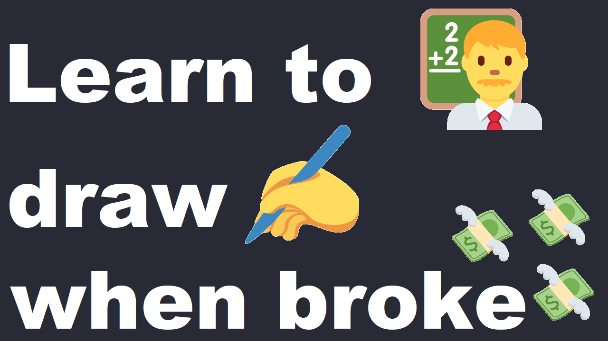

Learn to draw ✍️ when broke 💸

I have been in your position before. My main goal was to get into digital drawing. But I didn't know how to draw and I didn't know where to start. But let me give you some background. It was late 2019 and I just started a new job fresh out of college. I was broke, living with my parents, and had close to $100,000 in debt. I was a bit frusturated because I went to college not to be broke. Now I was like negative broke. Debt weights heavily... I thought I would be living a better life out of college, but it was my lowest. I had put off so much of my life that I now regret. I wish I could have lived in the moment more. So I started drawing in August of 2019 and I had a pencil, a corkboard, printer paper, and a copy of Nicolaides The natural way to draw. So I also got a piece of glass and a sharpie. I think the book was a bit too advanced for me at the time. I didn't have any drawing background, so I got a bit overwhelmed and stopped reading the book. I basically tried drawing with pencil and couldn't, so I traced my hand with a sharpie while observing my hand through the square piece of glass that I had. So what did I learn, not having a plan made me feel like I was aimless. I attempted to draw without a proper plan, and I severly lacked drawing fundamentals. If it helps, I have an article about making a One Page 📰 Drawing ✍️ Plan that can help you make a plan to reach your drawing goals.
I also learned that you probably have drawing tools lying around your house, or your parents house for that matter. Haha. I also learned about tools that make drawing more convenient. Use led that has the same thickness for lines that you draw. Having to stop and sharpen a pencil or led is annoying. A mechanical pencil with 0.5mm led works. Led that is thicker like 2mm size or anytype like wooden requires annoying maintenance to use. I suggest a mechanical one, specifically the Rotring 800 Retracteable Mechanical Pencil 0.5mm Black Barrel (1904447) the black one is easier to use in sunlight as well. I had a silver mechanical pencils, but they would annoyingly reflect the light in my eyes. A 0.5 fineliner pen also works as well. Originally, I used a corkboard clipboard, but it was difficult to use when drawing with my shoulder. I got the Springer Atlas Sax Sketch and Draw Board 12 x 18 inches Brown - 460973 from Amazon. It is large enough to comfortably draw with your shoulder. It fits in my Thule Backpack as well. But it may not fit in every backpack. But any drawing board or corkboard could work. But you could just as well use a hardcover book to draw on. Now after drawing aimlessly for months, I found drawabox.com on the internet. In short, it costs $5 a month for feedback but is highly worth it. I know some of this is getting into the realm of having money, but I feel like these tools are resources are cheap enough to get started. You could also look at meetup.com to try to learn from others. But most clubs have their dues. Clubs need support to survive. I also have an app called Drawesome 🎞️ that you can use to reference drawing images as you draw. Or you can find Croquis Cafe on YouTube for drawing reference.
All in all, you should be able to find tools to use for drawing around your house. You could also buy some other tools that will last you decades and are relatively inexpensive. Even if you move onto digital drawing, I still like to carry a mechanical pencil with me to draw when I am away from my desktop. You should be able to make do. What matters is that you are drawing and are having fun. If you goto your local library, you could probably get printer paper, a pencil, and use a computer for free. You can for sure find a way to draw if you are on a $0 budget, but it can be difficult.
Here is a list of the drawing tools I use
- Rotring 800 Retracteable Mechanical Pencil 0.5mm, Black Barrel (1904447)
- Faber Castell TK 4600 Clutch Pencil (Each) really stopped using it for Koh-i-noor mechanical pencil
- Koh-i-noor Mechanical Hardtmuth Lead Holder with 5.6mm x 80mm Lead, Black with Clip, 1 Each (5311CN1005PK)
- Pentel Mechanical Pencil Orenz 0.2mm Black Body (XPP502-A)
- Copic Sketch Markers 5/Pkg W/Multiliner Pen Sketching Grays
- Sandpaper Sharpener 2 pieces sketch sandpaper pencil sharpener lead pointer art drawing tool for adults
- Springer Atlas Sax Sketch and Draw Board 12 x 18 inches Brown - 460973
- HP printer paper
- iDream365 Upgraded hard pencil Case Box for Audits, Durable Pen Carrying case with zipper black